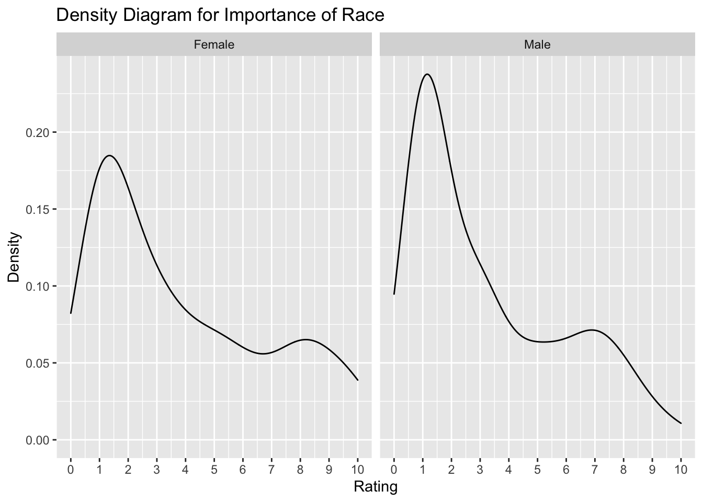
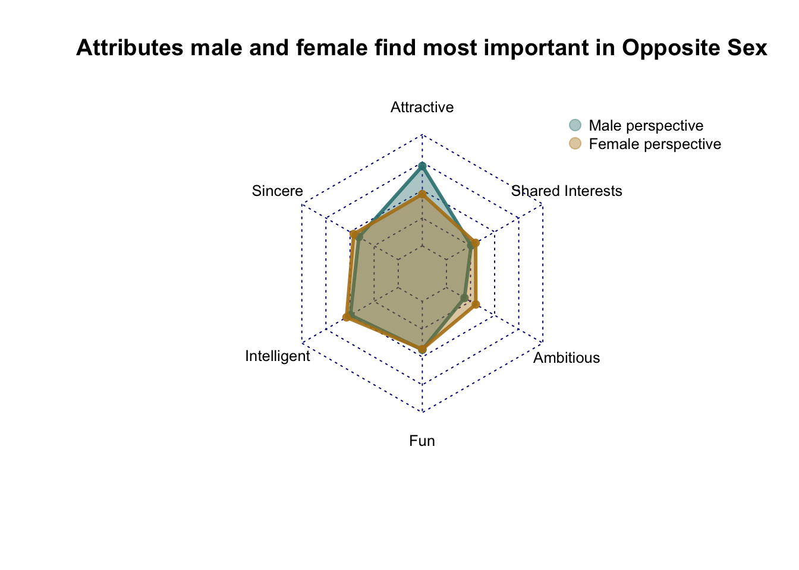
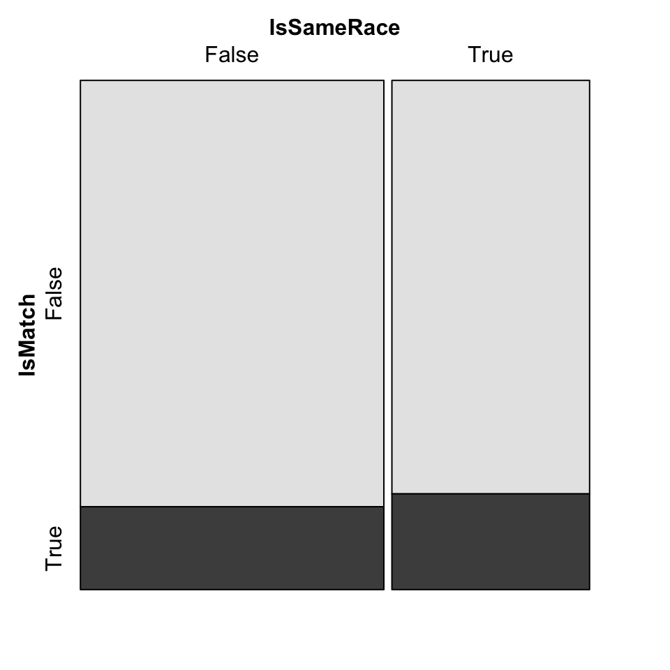

Chapter 5 Results
5.1 Between Race and Matching
We will start by looking at the distribution of race in the dataset and explore the relationship between race-related ratings and dating march.
From the histogram above, we can observe that majority of the participants are White, and we barely see any Native American and African American participants. Hence, this dataset is very unbalanced in terms of diverse demographic background of participants. In addition to the distribution of race among participants, we also investigate how important is race from participants’ perspectives. We generate the following histogram and density plot to demonstrate the importance of race.

From the histograms and density diagrams above, we can observe that majority of male and female participants gave a low rating to the importance of race. Specifically, a larger proportion of men rated the importance of race as 1 than the female participants. Does lower rating in the importance of rating related to a higher rate of successful matching? Here, we calculated the success rate by dividing the number of positive responses (when matching=1) by the total number of matching results. Then, we generate a scatter plot to see if the importance of rate is related to the success rate of matching.

We didn’t see a salient relationship between success rate and the importance of race in the scatterplot above. However, we see that participants with high success rate (above 0.7) are those who rate importance of race with a score of 3 or below. Participants who rated importance of race with 10 face a much smaller group of ideal dating partners and consequently have a much lower rate of success.
5.2 Traits and Matching
Now, we will look at the role of different traits (attractiveness, intelligence, sincerity, fun, ambition, and shared interests) in successful matching during speed dating.

From the boxplots above, we can observe that men’s rating of attractiveness has the highest median, while men’s rating on ambition has lowest mean among all. Among female participants, rating of sincerity has the highest median while rating for shared interests has the lowest median. We can conclude that, for men, the most desirable trait is physical attractiveness, while for female participants, the most important trait is sincerity. Despite gender differences in rating traits, we can also observe heterogeneity within each gender group. Other than male participants’ rating of shared interests, all other ratings disregard of gender have outliers, and the distribution of all ratings are skewed. Among all the ratings, ratings for attractiveness possess the greatest variability for both men and women.
We also generated a radar chart to compare the female and male ratings of the six attributes. We can observe similar features as in the boxplots. Male participants focus more on physical attractiveness than their female counterparts, while female participants value ambition more than the male participants. Male and female participants have similar perspectives on intelligence, sincerity and shared interests.

The mosaic plots below show the association between different traits and the decision after the speed dating. Attrativeness, fun, and shared interests are positive associated with decision. In other words, higher the scores for those three traits, the more likely the dating partner would decide yes after the date. Interestingly, high intelligence and ambition score seemed to have a negative association with decision. When intelligence score increases from 9 to 10, the proportion of positive responses drops.
